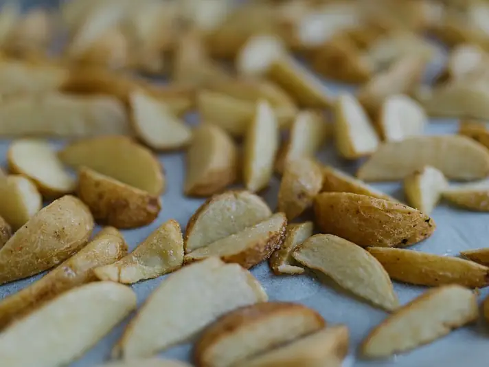

Фото: Shixart1985, CC BY 2.0

Картофель дольками в духовке
Хрустящие картофельные дольки с паприкой и чесноком
50 мин4 порц.290 ккал на порциюБ 5 · Ж 11 · У 42Интернациональная кухня
Продукты на 4 порц.
- Картофель8 шт
- Растительное масло3 ст. л.
- Паприка1 ч. л.
- Сушёные травы1 ч. л.
- Чеснок2 зуб.
- Соль1 ч. л.
- Перец чёрный молотый1 щеп.
Как готовить
- Разогрейте духовку до 200 °C (сильный жар).
- Картофель хорошо вымойте щёткой, кожуру не снимайте. Разрежьте каждую картофелину вдоль на 6-8 долек.
- Промокните дольки полотенцем досуха.
- Смешайте масло, паприку, травы, раздавленный чеснок, соль и перец. Перемешайте дольки с маслом руками.
- Разложите в один слой на противне с пергаментом кожурой вниз.
- Запекайте 35-40 минут до золотистой корочки, нож входит легко.
Совет. Не кладите дольки внахлёст, иначе они не подрумянятся, а будут вариться в пару. Сухой картофель хрустит лучше.